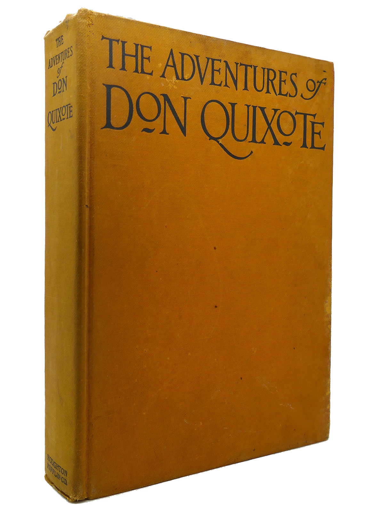

The Codex (commonly referred to as the book) takes information and segments it into multiple linked pages, much like the Website medium. Like the Scroll its content is static and limited only to text and image.
| Length | Finite |
| Experience | Linear, Segmented |
| Realm | Physical |
| Example |
Don Quixote

|
A book and much more (transcript)
by Christopher Kenneally Beyond the Book
What’s interesting is the way that the form of the book, as it has changed over time, has also led to changes in reading and in writing. That’s an important point. You mentioned this fear of the book, that it may die or that new forms may lead to some kind of corruption of thinking. This goes back to Socrates who was not a fan of writing, as it turns out.
That’s right. Socrates feared that the written word would destroy the art of rhetoric, which involved dialogue and debates and involved a thinker being able to represent their ideas to others. The rhetorical process was what he believed made ideas strong, polished them to a sheen through back and forth. He felt that if a text were allowed to circulate without its author, it would be misinterpreted, and it would be basically subject to destruction by others. It wouldn’t have that great back and forth.
But, in fact, it turns out the opposite is true. When you let texts circulate in written form, we have the Islamic world to thank for the replenishment of our stores of ancient texts which were translated. When you let texts circulate, that’s actually how ideas flourish because people in vastly distant places from one another can begin to have a dialogue via writing. I appreciate the fact that it almost seemed at that moment that one technology was going to give way to another, but, in fact, the rhetorical arts themselves flourished, in part of because of the possibility of writing them down.
And another moment in history when communication really stepped up to a new level was, of course, the invention of the printing press. One of the things about that was that it changed the size of the book. You mentioned this parallel between the clay tablet in one’s hand and the cell phone we carry today. But what is interesting is that the printed books, over time, grew smaller, grew more intimate. The language changed, too. It moved from Latin to vernacular in the European context. Talk about that change, as well, how books have become something very personal for us.
Yeah, that’s really true. I should say that there’s a kind of intermediate stage – obviously there are many intermediate steps between the cuneiform tablet and the codex paperback book that we all know and cherish. They include a lot of different sizes of books. The size is very much dependent upon the needs of the reader of that book.
So an important in-between stage between the printed book, say, Gutenberg, like you mentioned, and the clay tablet would be just manuscript culture and medieval monks copying out manuscripts of religious texts and songs using these beautiful large volumes that were large because they were intended to be consulted in a performative fashion, performing church services, needing to have a very large and showy beautiful text that was visible from the altar, so to speak. In those times readership was small. The number of literate people was rather small, and the number of people who could afford to purchase a manuscript book was also exceedingly small. Because they were these hand-produced artifacts that required scores of monks in a monastery working in the scriptorium, some actually doing the calligraphy, some illuminating the text by painting illustrations, some working on the binding, that became a costly endeavor. So only a few people could afford to own and read books at that time, and they largely stayed within the monasteries that produced them.
04